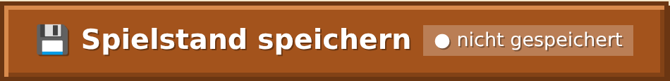
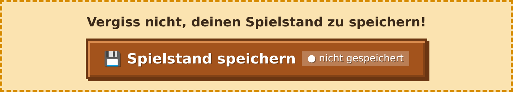
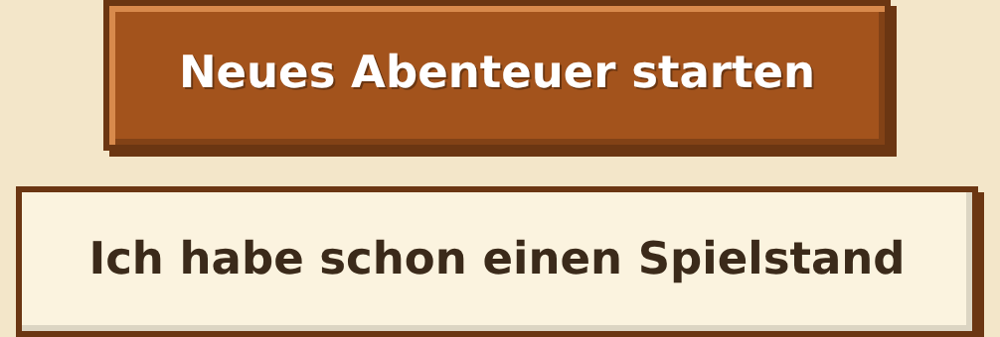
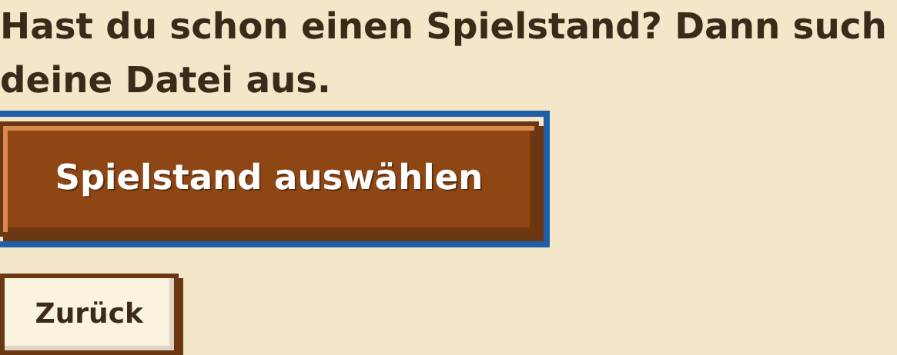

Tipp merkt sich deine Sterne nur, wenn du sie als Datei speicherst.
Klick auf „Spielstand speichern“. Den Knopf findest du oben auf der Weltkarte und nach jeder Runde. Steht daneben „nicht gespeichert“, hast du etwas Neues geschafft.


Speichere in deinem Ordner auf dem Netzlaufwerk oder auf deinem USB-Stick.
Den Dateinamen nicht ändern. Er sieht so aus:
Spielstand_Tastenheld_DeinName_2026-11-09.tastenheld
Benutzt du Firefox? Dann landet die Datei zuerst in „Downloads“. Verschieb sie danach in deinen Ordner.
Klick auf „Ich habe schon einen Spielstand“, dann auf „Spielstand auswählen“ und wähle deine Datei.

→